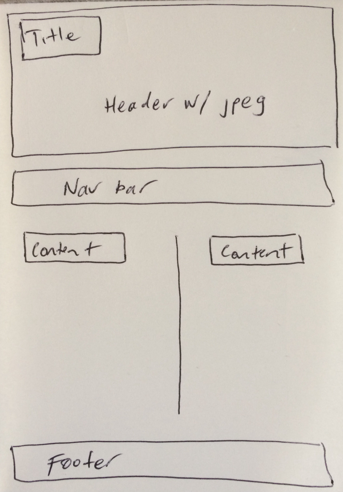

What is a responsive site, and why is responsiveness important?
Responsiveness, in regards to websites, means that the webpage(s) can be viewed in a streamlined, structured, and uncluttered way by all different types of devices. I.e. The website has code behind it that will allow for different screen sizes. It is important because people nowadays use multiple devices. Creating a rewarding user experience on all types of devices and screen sizes should always be a developer's goal.
What is mobile first design, and why is it important?
The term 'mobile first design' explains itself. It is the concept that websites should be developed first for mobile phones ( device with the lowest specs ) and then expanded upon as the screen resolution/bandwidth availability increases. A mobile first approach streamlines the development process, increasing effeciency, and makes sure the designer is creating a good product from the ground up. It is important also because mobile usage is becoming so popular, so a good mobile design is crucial.
What are frameworks, and what are their pros and cons?
Frameworks are code toolsets that solve problems that developers commonly encounter. They are often open-sourced, meaning that anyone can use them online, for free. There is a large community of framework developers on the web.
Frameworks are beneficial as they can help a projects effeciency. They assist in giving readliy-available structure to a site. Frameworks can possibly be detrimental to creativity and coming up with unique ways of site development, and also detrimental to coder development ( growth ) because not as much code is written, rather it's copied.
What is a wireframe and why do we use it?
A wireframe is a basic foundational element to website development. It is often a hand drawn schematic that sets out the site structure and design. Wireframes are used to give structure to ideas. Once the ideas are put into a wireframe, they can be elaborated on more easily, not only by oneself, but also a team.
Please see the below example - a wireframe of this site:

What aspects of my wireframes did I find difficult to implement, and why?
I found the CSS part the most difficult, in terms of implementing my design ideas. I'm still getting my head around many of its properties. In saying that, at this stage, I have decided to keep my site reasonably basic, so the design wasn't hugely problematic to implement.